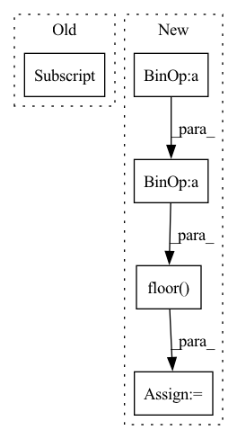

Pattern ID :12319
Before Change
for riind in range(griddat.shape[1]):
griddat[bind, riind].index_put_(
tuple(arr_ind.unsqueeze(0)),
tmp[bind, riind] ,
accumulate=True
)
else:After Change
centers = tf.cast(tf.floor(numpoints * L / 2), int_type)
// offset from k-space to first coef loc
kofflist = 1 + \
tf.cast(tf.floor( tm - numpoints[:, None] / 2.0) , int_type)
// initialize output array
griddat = tf.zeros(In pattern: SUPERPATTERN
Frequency: 3
Non-data size: 5
Instances Fragment ID: 41694300
Project Name: zaccharieramzi/tfkbnufft
Commit Name: e1123a8893ee7aeee9593a67d2151f8d860f384a
Time: 2020-03-01
Author: zaccharie.ramzi@gmail.com
File Name: tfkbnufft/nufft/interp_functions.py
M Class Name: AnonimousClass
N Class Name: AnonimousClass
M Method Name: run_interp_back(3)
N Method Name: run_interp_back(3)
M Parent Class:
N Parent Class:
M File Name: tfkbnufft/nufft/interp_functions.py
N File Name: tfkbnufft/nufft/interp_functions.py
M Start Line: 160
M End Line: 205
N Start Line: 161
N End Line: 190
Before Change
x, y, z = [], [], []
for p in pc:
x.append(p[0] )
y.append(p[1])
z.append(np.max(z_size) * 1.1)
After Change
ax = plt.axes(projection="3d")
n_pillars_x = math.floor((x_max - x_min) / grid_cell_size)
n_pillars_y = math.floor( (y_max - y_min) / grid_cell_size)
pillar_matrix = np.zeros(shape=(n_pillars_x, n_pillars_y, 1))
for x, y in indices:
pillar_matrix[x, y] += 1 Fragment ID: 41694302
Project Name: jabb0/fastflow3d
Commit Name: 2cea1baba708f960f17398bd7dcbd6f865692208
Time: 2021-06-13
Author: aron.distelzweig@hotmail.com
File Name: utils/plot.py
M Class Name: AnonimousClass
N Class Name: AnonimousClass
M Method Name: plot_pillars(6)
N Method Name: plot_pillars(3)
M Parent Class:
N Parent Class:
M File Name: utils/plot.py
N File Name: utils/plot.py
M Start Line: 21
M End Line: 44
N Start Line: 7
N End Line: 31
Before Change
log_prob = []
batches = np.array_split(raw_count, n_batch)
for b in range(n_batch):
count_batch = batches[b]
log_prob_batch = Multinomial(
probs=torch.tensor(ambient_prof), validate_args=False
).log_prob(torch.Tensor(count_batch))
log_prob.append(log_prob_batch)After Change
// calculate joint probability (log) of being cell-free droplets for each droplet
log_prob = []
batch_idx = np.floor(
np.array(range(raw_adata.shape[0])) / raw_adata.shape[0] * n_batch
)
// batches = np.array_split(raw_count, n_batch)
for b in range(n_batch):
try:
count_batch = raw_adata[batch_idx == b].X.astype(int).A
except MemoryError:
raise MemoryError("use more batches by setting a higher n_batch")
log_prob_batch = Multinomial( Fragment ID: 41694328
Project Name: novartis/scar
Commit Name: 15f18408dcd2ef4bdb1de84b55a136da03fb6244
Time: 2022-06-08
Author: caibin.sheng@novartis.com
File Name: scar/main/_setup.py
M Class Name: AnonimousClass
N Class Name: AnonimousClass
M Method Name: setup_anndata(10)
N Method Name: setup_anndata(10)
M Parent Class:
N Parent Class:
M File Name: scar/main/_setup.py
N File Name: scar/main/_setup.py
M Start Line: 95
M End Line: 110
N Start Line: 107
N End Line: 117